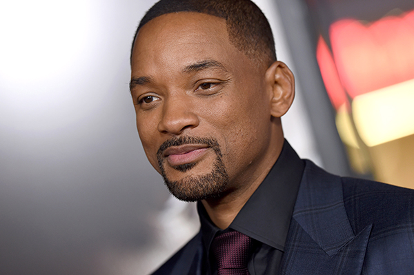

Smith first gained recognition as part of a hip hop duo with DJ Jazzy Jeff, with whom he released five studio albums which contained five Billboard Hot 100-top 20 singles—"Parents Just Don't Understand", "A Nightmare on My Street", "Summertime", "Ring My Bell", and "Boom! Shake the Room"—from 1985 to 1994. He released the solo albums Big Willie Style (1997), Willennium (1999), Born to Reign (2002), and Lost and Found (2005), which spawned the U.S. number-one singles "Gettin' Jiggy wit It" and "Wild Wild West". He has won four Grammy Awards for his recording career.
1968 – Born in Philadelphia, Pennsylvania.
1985 – Forms hip-hop duo with DJ Jazzy Jeff.
1988 – Wins first Grammy Award for Best Rap Performance.
1990 – Stars in the hit TV show The Fresh Prince of Bel-Air.
1995 – Breakout movie role in Bad Boys.
1996 – Global fame with Independence Day.
1997 – Stars in and sings theme for Men in Black.
2001 – Earns Oscar nomination for Ali.
2007 – Stars in I Am Legend, one of his biggest hits.
2022 – Wins Oscar for King Richard but faces controversy after onstage slap.